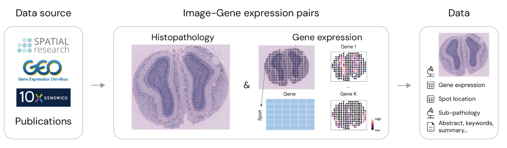
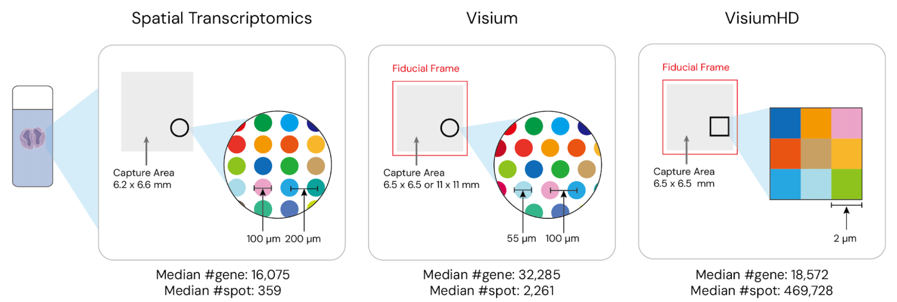
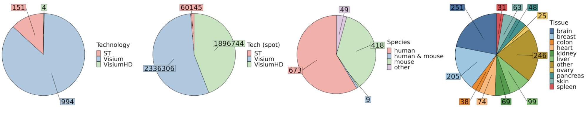
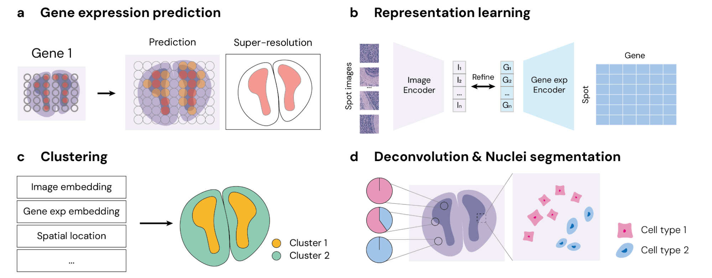
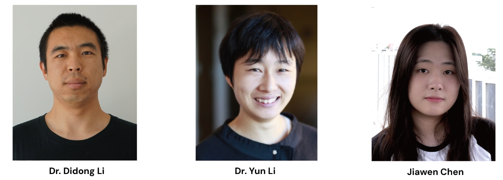

Introduction to STimage-1K4M: A Histopathology Image-gene Expression Dataset for Spatial Transcriptomics

Recent advances in multi-modal algorithms have driven and been driven by the increasing availability of large matched image-text datasets, leading to significant strides in various fields, including computational pathology. Histopathology plays a crucial role in medical diagnostics. Recent efforts to collect and annotate histopathology slides have opened up new opportunities for multi-modal algorithms, with annotations varying from simple single labels, such as cell/nuclei types in PanNuke (Gamper et al., 2019) to more complex natural language descriptions derived from social media sources such as Twitter or YouTube, as seen in datasets such as OpenPath (Huang et al., 2023) and Quilt-1M (Ikezogwo et al., 2024). Despite the advancement in histopathology annotation, histopathology slides remain complex and contain a wealth of information that can be challenging to encapsulate in a limited amount of text (Radford et al., 2021; Chen and Zou, 2023). These large tissue slides often feature diverse tissue structures, making it difficult to accurately describe all aspects within a confined-length text.
To address this need, we highlight spatial transcriptomics (ST) (Ståhl et al., 2016; Moses and Pachter, 2022), a technology that measures gene expression while preserving spatial information within the tissue. A key advantage of ST is its ability to provide both high-resolution histopathology images and detailed whole-transcriptome data for each spatial coordinate within a large tissue slide (Ståhl et al., 2016). This makes ST a perfect source for paired medical image and text datasets, offering a richer, more accurate annotation that addresses the limitations of over-simplified textual descriptions that typically focus solely on broad categories like cancer or non-cancer regions. By providing high-dimensional annotations for each sub-tile, ST enables a more comprehensive understanding of tissue granularity, facilitating various studies including cell-cell communication, tissue architecture, disease diagnosis, and progression (Ståhl et al., 2016; Tian et al., 2023).
The rise of ST and spatial omics data has spurred the development of various datasets that focus on transcriptomics or other omics data in tissue samples. Notable databases include SpatialDB (Fan et al., 2020), STOmicsDB (Xu et al., 2022), SPASCER (Fan et al., 2023), SODB (Yuan et al., 2023), Aquila (Zheng et al., 2023), Museum of Spatial Transcriptomics (Moses and Pachter, 2022), SORC Zhou et al. (2024), and SOAR (Li et al., 2022). These datasets focus primarily on gene expression data, providing researchers with a wealth of information about the spatial distribution of gene expression in tissue samples. However, there is currently a lack of datasets that provide paired image and gene expression data, which is crucial for bridging the gap between visual information and underlying transcriptomic profiles. Here, we introduce STimage-1K4M (NeurIPS 2024), a groundbreaking dataset specifically designed to enhance the integration between histopathology and gene expression using spatial transcriptomics (ST). There are over 10,000 downloads as of Dec 7, 2024.
STimage-1K4M Composition

STimage-1K4M is a meticulously curated collection of 1,149 histopathology images, derived from spatial transcriptomics data. Each image could be divided into smaller sub-tiles (commonly referred to as spots), each paired with high-dimensional gene expression data ranging from 15,000 to 30,000 dimensions. With over 4 million pairs of sub-tile images and gene expressions, STimage-1K4M offers unprecedented granularity, paving the way for a wide range of advanced research in multi-modal data analysis and innovative applications in computational pathology and beyond.

STimage-1K4M is built on data from three leading ST technologies: Spatial Transcriptomics (Ståhl et al., 2016), Visium, and VisiumHD (10x Genomics). These technologies capture gene expression at various resolutions, with VisiumHD offering the highest, down to an 8µm x 8µm bin structure. The dataset spans 10 species and includes 50 distinct tissue types, with a significant portion focusing on brain and breast tissues. Additionally, STimage-1K4M includes pathologist annotations for 71 slides, further enriching the dataset by providing “ground truth” labels for spatial domain detection and clustering tasks. Moreover, the dataset includes textual information such as study titles, abstracts, and relevant keywords for each study, further enhancing its utility for comprehensive research.

Applications and Impact
STimage-1K4M is poised to revolutionize computational pathology and beyond. By offering a rich, multi-modal dataset, it supports a wide range of tasks, including gene expression prediction, resolution enhancement, spatial clustering, and deconvolution. These capabilities are particularly valuable for researchers aiming to develop new diagnostic tools or explore cellular heterogeneity of tissues in unprecedented detail.

STimage-1K4M’s extensive collection of image-gene expression pairs also makes it an invaluable resource for training and fine-tuning advanced multi-modal models. For instance, preliminary experiments using STimage-1K4M have demonstrated significant improvements in model performance when integrating pathology images with gene expressions, underscoring the dataset’s potential to drive future advancements in the field.
Conclusion
STimage-1K4M represents a significant leap forward in the field of computational pathology. By bridging the gap between histopathology images and detailed genomic data, it opens up new avenues for research and innovation.
STimage-1K4M is now publicly accessible on Hugging Face at https://huggingface.co/datasets/jiawennnn/STimage-1K4M. Additionally, you can request access to our FTP server via our GitHub repository https://github.com/JiawenChenn/STimage-1K4M. For researchers interested in utilizing our dataset, our website (https://jiawenchenn.github.io/STimage-1K4M/docs/00_about) provides several supporting resources, including a pipeline for converting our data into the commonly used AnnData format, processing steps, downstream analysis guidelines, and instructions on how to fine-tune large vision models using our data. For more detailed information about the dataset and experiments, you can refer to our manuscript available here.

References
- Chen, Y. T. and J. Zou (2023). Genept: A simple but hard-to-beat foundation model for genes and cells built from ChatGPT. bioRxiv.
- Fan, Z., R. Chen, and X. Chen (2020). Spatialdb: a database for spatially resolved transcriptomes. Nucleic acids research 48(D1), D233–D237.
- Fan, Z., Y. Luo, H. Lu, et al. (2023). Spascer: spatial transcriptomics annotation at single-cell resolution. Nucleic Acids Research 51(D1), D1138–D1149.
- Gamper, J., et al. (2019). Pannuke: an open pan-cancer histology dataset for nuclei instance segmentation and classification. In Digital Pathology. Springer.
- Moses, L., & Pachter, L. (2022). Museum of spatial transcriptomics. Nature Methods 19(5), 534–546.
- Radford, A., et al. (2021). Learning transferable visual models from natural language supervision. In ICML.
- Ståhl, P. L., et al. (2016). Visualization and analysis of gene expression in tissue sections by spatial transcriptomics. Science 353(6294), 78–82.
- Tian, L., et al. (2023). The expanding vistas of spatial transcriptomics. Nature Biotechnology 41(6), 773–782.
- Xu, Z., et al. (2022). Stomicsdb: a database of spatial transcriptomic data. bioRxiv.
- Yuan, Z., et al. (2023). Sodb facilitates comprehensive exploration of spatial omics data. Nature Methods 20(3), 387–399.
- Zheng, Y., et al. (2023). Aquila: a spatial omics database and analysis platform. Nucleic Acids Research 51(D1), D827–D834.
- Zhou, W., et al. (2024). Sorc: an integrated spatial omics resource in cancer. Nucleic Acids Research 52(D1), D1429–D1437.